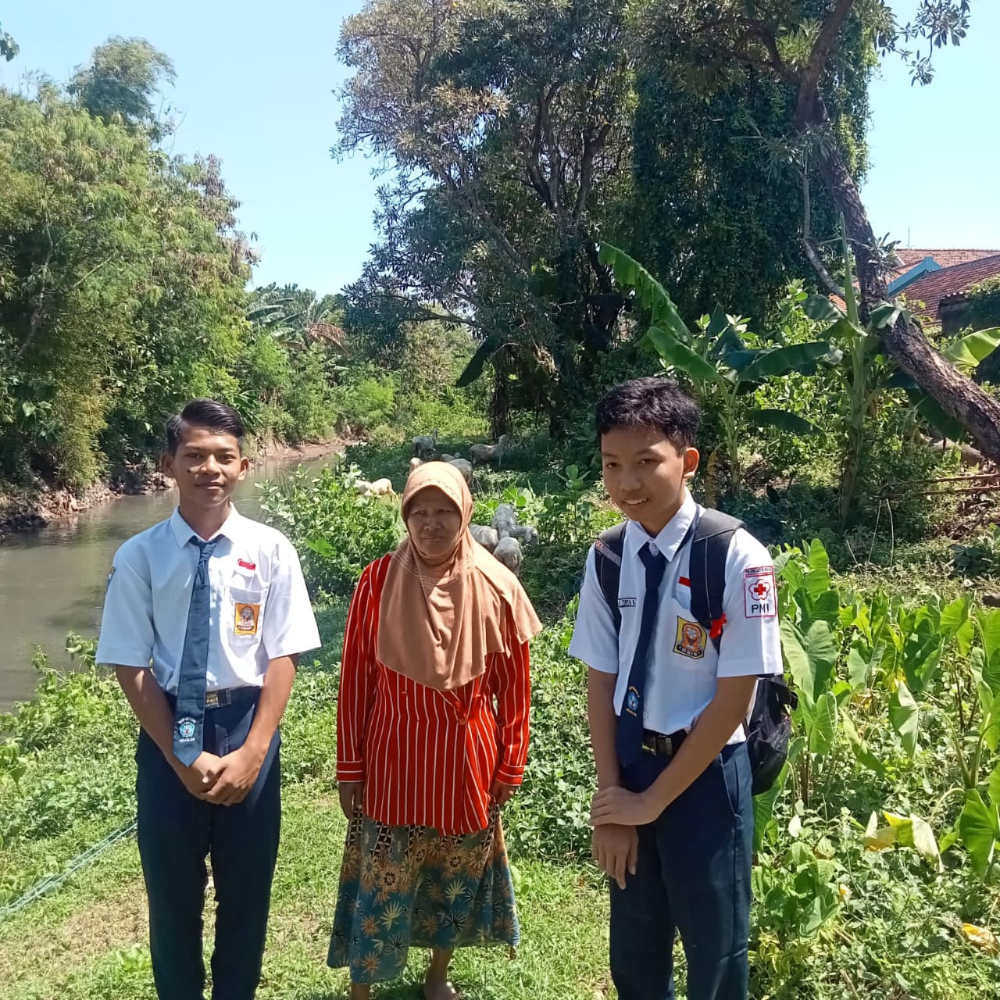
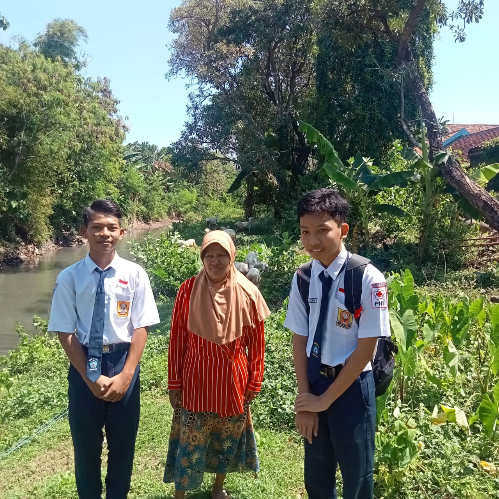

Bintang malam berkelip indah, Menemani hati tenang yang terasa sayah, Langkah kecil penuh doa pasrah, Nama saya Gadhing Aji Tirta Nugraha. saya adalah pribadi yang peduli, Freindly, dan praktis. Menikmati hal-hal yang sederhana namun terorganisir karena memberi rasa tenang dan fokus, senang aja rasanya. berusaha menjadi sosok yang bisa diandalkan. saya sering memikirkan hal-hal kecil secara sangat mendalam oleh karena itu saya sering terlihat melamun diam terlihat kalem dan tidak peduli padahal aslinya sedang berfikir keras 😅. jadi tolong banget jangan menilai saya sebagai tidak peduli dll 🙏🏻😭🙏🏻. saya suka saat malam hari datang sekaligus menjadi tema web ini entah mengapa rasanya tenang aja apa mungkin karena emang orang IT Idk 🙂↔S.. and honestly I'm afraid of lightning 🥲
![Gambar 3]() 

- "Sesuatu membuatku tahu di mana aku berada, Tapi aku tak tahu di mana aku berdiri"
- "Terbaring, Tersetak, Tertawa dengan air mata mengingat bodohnya dunia"
Ya SD, saat itu saya bersekolah di SD Negeri 1 Kauman Nganjuk 🏫. Tahun itu 2015/2016 📅 mengingat rumah saya berada di belakang pas tepatnya sebelahan dengan toilet sekolah, ya jadi saya tinggal loncat pagar saja 😄. Masuk kelas 1 & 2 sama saja seperti TK hanya saja lebih interaktif dan berfokus ke materi baru. Kelas 3, 4, dan 5 disilah kesalahan saya saat belajar, dimana saya kurang fokus dalam belajar hingga banyak materi yang tertinggal. Kelas 6 masa penentuan masuk zaman racun dunia Covid-19, semuanya sudah mulai masuk masa keabu-abuan, namun akhirnya saya berhasil lolos juga 🎉.
EsemPeh 😄. Melanjutkan pendidikan dari SD di SMP Negeri 3 Nganjuk 🏫, saya pun tak tahu jelas mengapa saya ke sini selain ada kenalan guru. Selain itu, setelah lepas dari jeratan masa-masa NoLife Covid-19 🦠 dan mulai beradaptasi dengan lingkungan baru, awalnya saya memang kurang aktif tapi lama-lama ada perubahan juga. Di sini entah mengapa saya lebih mudah menyerap pelajaran dibanding teman-teman sejenis dan seperantara saya, jika ditanya biasanya akan bingung dulu, itu orang lain, kalau saya langsung nyambung dengan topik 📖. Dan karena itulah muncul julukan julukan untuk saya 🏅, walaupun masih sedikit bodong dalam teknik karena tertinggal pelajaran di SD.
;), nggak kerasa tiba-tiba masuk SMA. Melanjutkan dari EsemPeh di SMA Negeri 1 Nganjuk 🏫, awalnya bingung milih SMK atau SMA namun akhirnya takdir membawaku ke sini. Awal yang kurang baik terjadi di sini dengan pertemanan Gugus yang sedikit kurang akrab, namun akhirnya saya berada di kelas pojok X-11. Saya sangat bersyukur 🙏 ada di kelas ini karena didukung pertemanan yang sangat positif, dan saya dengan mudah berkenalan dengan teman baru karena dipungut anak ekstrovert yang juga teman Gugus. Masih sama seperti sebelumnya, pengalaman saya di SMP masih terbawa; saya mulai aktif dan mudah menerima pelajaran 📖 bahkan saya ditakuti saat memberi pertanyaan ke kelompok yang presentasi, entah mengapa?. Dan karena itulah saya dijuluki "Profp". Perjalanan masih panjang, mungkin hanya itu untuk sekarang ;).
Menengok kembali ke masa lalu 📜, sejak kecil saya sudah dikenalkan dengan teknologi, salah satunya komputer dan laptop 💻. Ya, sedikit lah ada skill teknologi & TKJ walau nggak keterima di SMK, setidaknya masih ada kesempatan di SMA Negeri 1 Nganjuk yaitu di Ekstrakurikuler Informatic Smasa Community. Awalnya saya kira ada pemahaman seperti oprek-oprek, tapi ternyata hanya pemahaman intelektual. Ya, nggak apa-apa sih, saya juga punya pengalaman tersendiri tentang itu. Awal yang ragu untuk meneruskannya, akhirnya saya menetap di sini bersama teman-teman baru 🤝 yang akan tetap tidak terpisah karena naik kelas 11 walaupun kenyataan akan teerhenti di kelas 12 😭🥺. Di sini juga saya mulai berubah menjadi sosok yang lebih baik, dan banyak sekali pengalaman berharga yang saya dapatkan. Di sinilah saya mengalami "PUNCAK?" dari masa-masa SMA saya.
Dulu saat kecil saya gendut namun lama kelamaan sedikit turun badan. juga saya dulu sangat sering bermain keluar sampai sering dimarahi alhasil kulitpun gelap. tak cuma itu karena lingkungan rumah saya dekat dengan sungai saya serig tercebur ke sungai dan itupun karena hal konyol dengan bersepedah dalam kecepatan tinggi. namun semua itu berubah ketika Smartphone mulai hadir. semua berubah cara bersenang senang dan bermain pun ikut berubah. puncaknya saat Covid19 yang membuat hidup saya berubah total menjadi pendiam dan NoLife dirumah hanya melihat Sosial media dan Game yang kebanyakan channel internasional sehingga bahasa saya sering tercampur dengan bahasa inggris bahkan terbawa ke kehidupan sehari hari. dan entah mengapa kulit saya yang sebelumnya cokelat gelap berubah menjadi sedikit putih bahkan beberapa teman teman saya juga sedikit kaget melihat warna kulit saya yang bisa cepat berubah. jujur saja walaupun saya memiliki kelebihan bukan berarti tak memiliki kekurangan. saya sangat kurang dalam hal tentang Agama dan Olahraga dimulai semenjak SMP hingga sekarang mungkin?. yaa gatau sih mungkin saya cocoknya di perkuliahan dimana bisa mengembangkan diri sesuai minat dan bakat tanpa halangan yang diwajibkan. dan saat tertentu seperti cemas,stress,salting,dll saya sering bertingkah diam bahkan hanya saat terjadi sesuatu memang jika dilihat dari fisik batin hanya begitu sedangkan keadaan dalam pikiran sangat beragam dan sangat ramai, terkadang saya bisa berbicara dengan pikiran saya sendiri 😅. bukan berarti saya seperti kurang peduli dan aktif jika ada suatu keadaan, hanya saja saya mulai mengajak diri saya sendiri untuk berbicara tanpa mengganggu aktivitas eksternal dan itupun "hanya terjadi di saat saat tertentu".
Namanya juga manusia pastinya butuh pandangan orang lain untuk melihat diri kita yang sebenarnya. aku mau banget dengar pendapat dan penilaianmu tentang diriku. Masukan dan evaluasimu itu berharga banget buatku, supaya aku bisa berkembang jadi pribadi yang lebih baik ke depannya. Jadi, kalau kamu ada waktu, tolong isi form refleksi di bawah ini ya 🙏🏻✨. Aku akan sangat menghargai setiap kata yang kamu tulis, karena dari situ aku bisa belajar, memperbaiki diri, dan memahami bagaimana orang lain melihatku.
"I just need your input, it is very valuable for me 😇"